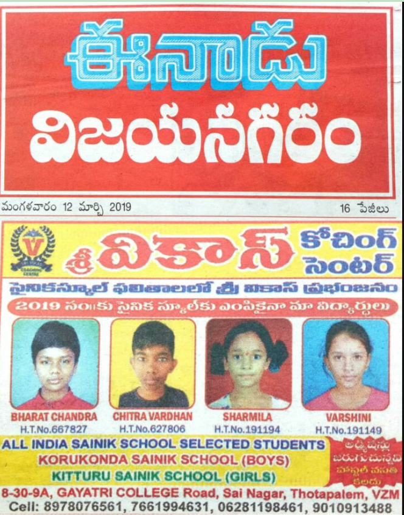

Korada bharatchandra success celeberations
Military school seat for Bharatchandra Newsday: 2019 All India Korada Bharatchandra from Gajularega area of town got rank in open category section in Vizianagaram education department, military school entrance examination (Korukonda). He excelled in the examination conducted for admission to the sixth standard. This student has the honor of scoring more than 18 while showing talent in the memory section. Parents said that they are proud. The book of records belongs to the student talent themselves
All India Sainik School Selected Students 2019
Sri Vikas Coaching Center takes immense pride in its students' outstanding success in the 2019 Sainik School entrance exams. Our dedicated coaching and expert guidance have helped Bharat Chandra, Chitra Vardhan, Sharmila, and Varshini secure admissions to the prestigious Korukonda Sainik School (Boys) and Kittur Sainik School (Girls). This achievement reflects our commitment to providing top-quality training, personalized mentoring, and strategic preparation for competitive exams. Our experienced faculty ensures that every student receives the necessary support to excel in their academic journey. Join Sri Vikas Coaching Center and take the first step towards a bright and successful future!
Leave a comment